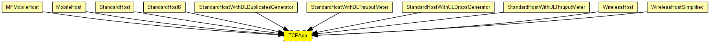
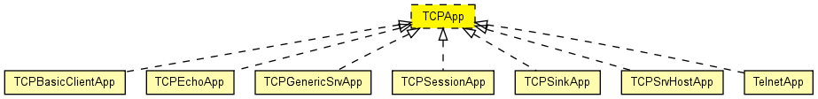

Template for TCP applications. It shows what gates a TCP app needs, to be able to be used in StandardHost etc.
The following diagram shows usage relationships between types. Unresolved types are missing from the diagram. Click here to see the full picture.
The following diagram shows inheritance relationships for this type. Unresolved types are missing from the diagram. Click here to see the full picture.
If a module type shows up more than once, that means it has been defined in more than one NED file.
| MFMobileHost (compound module) |
Models a mobile host with a wireless (802.11b) card in ad-hoc mode. This model contains the Mobility Framework's 802.11 implementation, Nic80211, and IP, TCP and UDP protocols. The mobility model can be dynamically specified with the mobilityType parameter. |
| MobileHost (compound module) |
Models a mobile host with a wireless (802.11b) card in ad-hoc mode. This model contains the new IEEE 802.11 implementation, Ieee80211Nic, and IP, TCP and UDP protocols. The mobility model can be dynamically specified with the mobilityType parameter. |
| StandardHost (compound module) | |
| StandardHost6 (compound module) | |
| StandardHostWithDLDuplicatesGenerator (compound module) |
IP host with TCP, UDP, SCTP layers and applications AND PPPInterfaceWithDLDuplicatesGenerator. |
| StandardHostWithDLThruputMeter (compound module) |
IP host with TCP, UDP, SCTP layers and applications AND PPPInterfaceWithDLThruputMeter. |
| StandardHostWithULDropsGenerator (compound module) |
IP host with TCP, UDP, SCTP layers and applications AND PPPInterfaceWithULDropsGenerator. |
| StandardHostWithULThruputMeter (compound module) |
IP host with TCP, UDP, SCTP layers and applications AND PPPInterfaceWithULThruputMeter. |
| WirelessHost (compound module) |
Models a host with one wireless (802.11b) card in infrastructure mode. This module is basically a StandardHost with an Ieee80211NicSTA added. It should be used in conjunction with WirelessAP, or any other AP model which contains Ieee80211NicAP. |
| WirelessHostSimplified (compound module) |
Models a host with one wireless (802.11b) card in infrastructure mode, but using a simplified NIC that does not support handovers. This module is basically a StandardHost with an Ieee80211NicSTASimplified added. It should be used in conjunction with WirelessAPSimplified, or any other AP model which contains Ieee80211NicAPSimplified. |
| Name | Value | Description |
|---|---|---|
| display | i=block/app |
// // Template for TCP applications. It shows what gates a TCP app // needs, to be able to be used in StandardHost etc. // moduleinterface TCPApp { parameters: @display("i=block/app"); gates: input tcpIn @labels(TCPCommand/up); output tcpOut @labels(TCPCommand/down); }